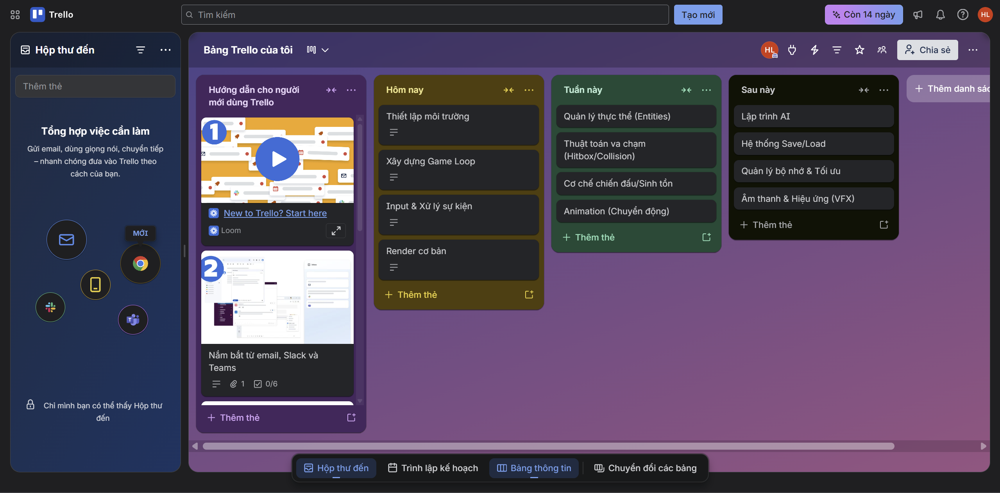
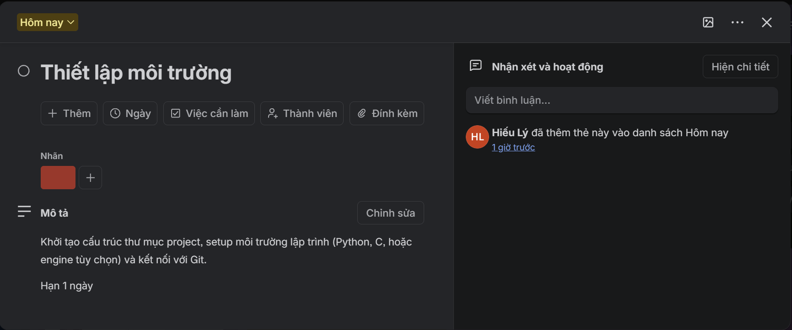
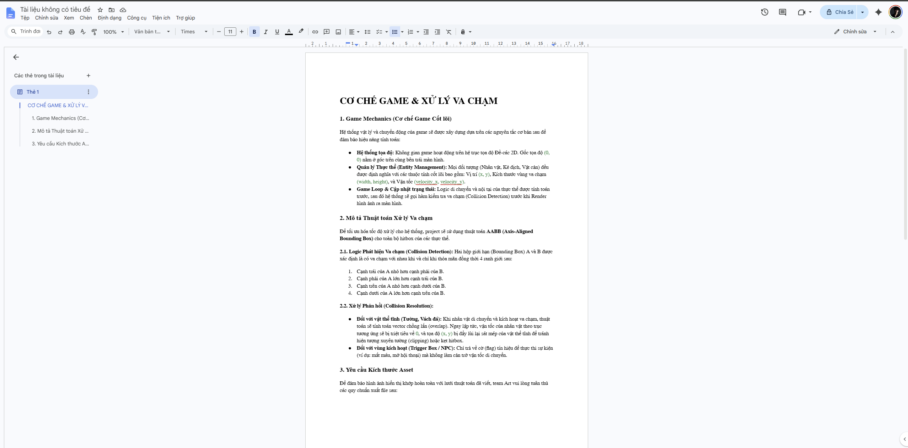
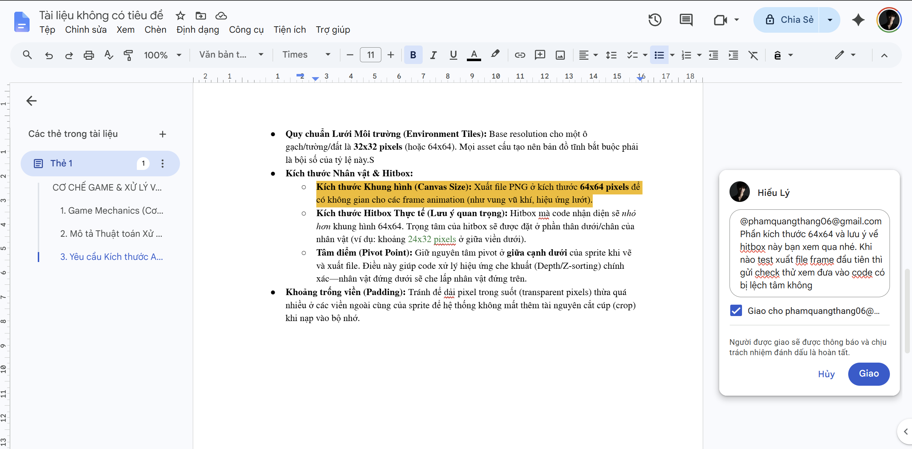
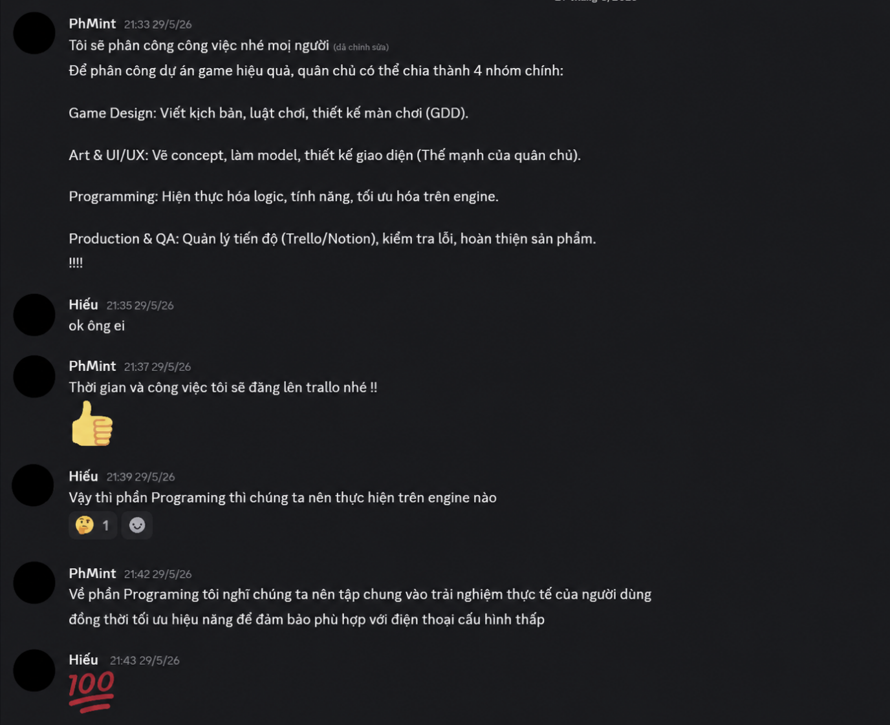
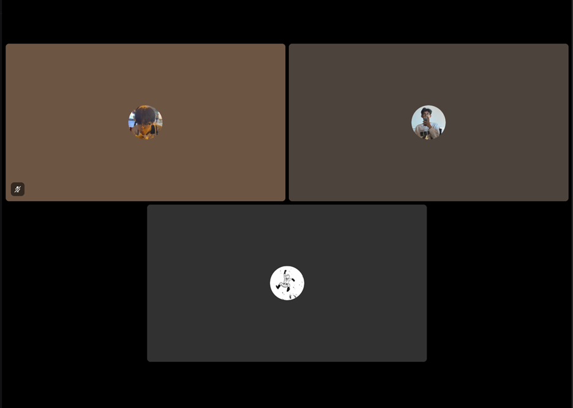
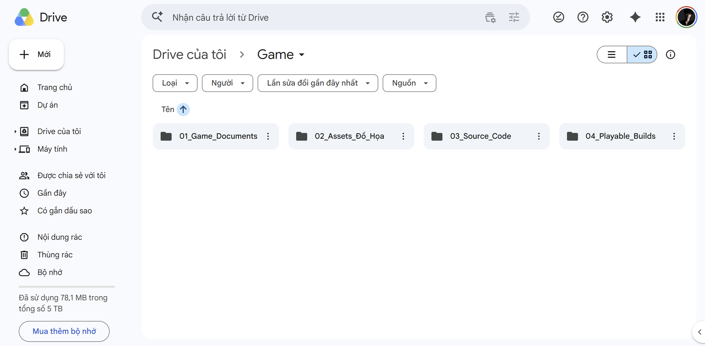
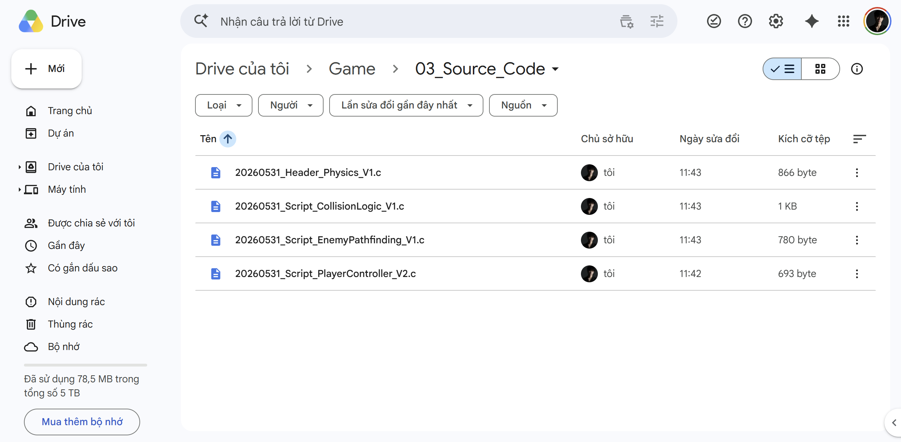
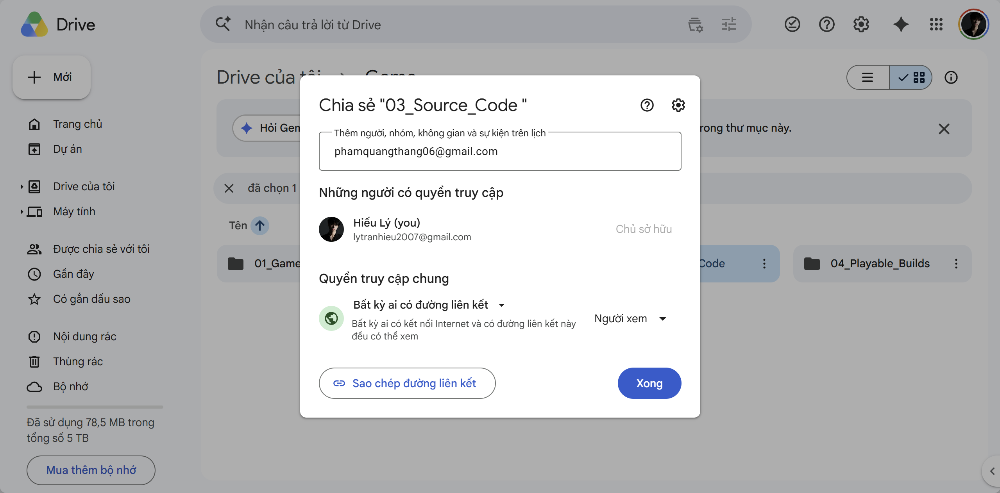

Dự án: Thiết kế một game trên mobile
Vai trò trong nhóm: Lập trình viên (Coder)
Trong quá trình thực hiện dự án game, khối lượng mã nguồn (source code), logic xử lý va chạm và việc tích hợp tài nguyên (ảnh, âm thanh) đòi hỏi sự chính xác tuyệt đối. Do đó, tôi đã thiết lập và sử dụng đồng bộ hệ sinh thái 4 công cụ thuộc các nhóm khác nhau, đồng thời tối ưu hóa không gian làm việc bằng các tiện ích tự động hóa:
Hoạt động: Tôi tham gia xây dựng bảng Kanban cho nhóm, phân chia luồng công việc thành các cột: Hôm nay -> Tuần này -> Sau này -> Review -> Done. Tôi duy trì việc cập nhật trạng thái thẻ tác vụ, kéo thả công việc và check checklist thường xuyên (trung bình 4-5 lần/tuần, vượt mức yêu cầu 3 lần/tuần).
Minh chứng:

Hoạt động: Bên trong mỗi thẻ nhiệm vụ do tôi phụ trách (VD: "Thiết lập môi trường"), tôi thiết lập hệ thống Label (Nhãn màu) để phân loại: Bug (Đỏ), Feature (Xanh), Optimization (Vàng). Mỗi thẻ đều có Checklist chi tiết (Setup biến -> Viết logic -> Test -> Merge) và đính kèm Deadline sát sao.
Minh chứng:

Hoạt động: Tôi trực tiếp đảm nhận biên soạn phần "Game Mechanics (Cơ chế Game)" và "Mô tả thuật toán xử lý va chạm" trong file GDD chung. Đảm bảo team đồ họa hiểu rõ kích thước asset cần vẽ để khớp với code.
Hoạt động: Tôi duy trì tần suất chủ động tương tác, hỗ trợ thành viên khác trên 12 lượt/tuần. Tôi dùng tính năng "Comment" để tag (@) trực tiếp các bạn 2D Artist yêu cầu xuất lại file ảnh đúng tỷ lệ, hoặc dùng "Suggesting" để làm rõ các luồng logic trong kịch bản game.
Minh chứng:


Hoạt động: Để đồng bộ hóa hệ thống, tôi cấu hình bot tự động trên Discord báo cáo mỗi khi tôi hoàn thành việc merge code trên Trello hoặc có thắc mắc cá nhân.
Minh chứng:

Hoạt động: Khi gặp các Bug khó hoặc sai lệch tọa độ hiển thị hình ảnh, tôi chủ động mở phòng Google Meet/Discord Voice, dùng Share Screen màn hình trình biên dịch (IDE) hoặc Game Engine để chạy debug trực tiếp, giúp nhóm hình dung rõ nguyên nhân lỗi.
Minh chứng:

Hoạt động: Để mã nguồn không bị lộn xộn với file thiết kế, tôi đã thiết kế cây thư mục phân cấp logic trên Drive: Thư mục gốc chia ra 01_Game_Documents, 02_Assets_Đồ_Họa, 03_Source_Code và 04_Playable_Builds.
Minh chứng:

Hoạt động: 100% tệp tin mã nguồn đều được đặt tên đúng quy chuẩn: [Ngày]_[Phân_Loại]_[Tên_Script]_V[Số phiên bản] (VD: 20260531_Script_PlayerController_V2.c). Về phân quyền (Permission): với thư mục 03_Source_Code, chỉ coder chúng tôi giữ quyền "Editor", các bạn họa sĩ chỉ được cấp quyền "Viewer" để tránh việc vô tình xóa nhầm hoặc làm hỏng cấu trúc mã nguồn.
Minh chứng:


Quá trình lập trình trong một nhóm làm game mang lại nhiều bài học lớn về tư duy hệ thống. Tuy nhiên, nhóm đã đối mặt với 3 thách thức lớn và tôi đã áp dụng các giải pháp sau:
Vấn đề: Các Artist thường lưu đè lên file ảnh cũ với tên mới hoặc định dạng khác, khiến script load ảnh trong code của tôi bị báo lỗi "File Not Found" liên tục.
Giải pháp: Tôi thiết lập quy định sử dụng tính năng "Manage Versions" (Quản lý phiên bản) của Google Drive đối với thư mục 02_Assets_Đồ_Họa. Họa sĩ sẽ update version đè lên file cũ để giữ nguyên link tải và tên file, giúp mã nguồn tự động nhận diện bản cập nhật mà không cần tôi phải sửa code thủ công.
Vấn đề: Khi chơi thử bản Build, các thành viên thường nhắn tin báo lỗi rải rác trên Discord, khiến tôi bị trôi tin nhắn và quên fix một số bug quan trọng.
Giải pháp: Ràng buộc quy định Bug Tracking: Bất kỳ lỗi nào được phát hiện đều phải tạo thành một thẻ Card màu đỏ (Label: Bug) trên Trello, có mô tả cách tái hiện lỗi và đính kèm ảnh chụp màn hình. Tôi chỉ ưu tiên fix lỗi có trên bảng Trello.
Vấn đề: Tôi thường code xong và xuất bản Build game vào đêm khuya, nhưng các thành viên khác không biết để vào test, làm chậm tiến độ phản hồi của ngày hôm sau.
Giải pháp: Sử dụng tính năng Webhook kết nối Trello và Discord. Ngay khi tôi chuyển thẻ task "Xuất Build V1.2" sang cột "Done", hệ thống tự động bắn một thông báo âm thanh vào kênh #build-testing, tag tên toàn bộ đội test (@everyone) để sáng hôm sau họ mở máy là thấy ngay nhiệm vụ.